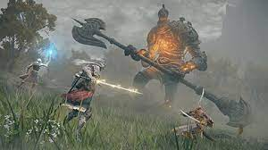

Elden Ring is an Action RPG developed and published by From Software in February 2022. It's the spiritual successor of the Dark Souls series made by the same company. The game includes new features like open world, jumping, horse riding and horse combat, and features 3 times the scale of any previous Souls title.
Elden Ring receives universal appraisal from both journalists and the public. The well crafted world along with a refined combat system with a huge variety of character building is very well received. However there has always been a voice bashing Elden Ring for not providing a easy mode. The voice has been insisting that an easy mode is necessary for Elden Ring to be enjoyed by a wider audience, even though it has sold over 10 million copies just in three weeks, making it one of the most popular games nowadays.
Publish Date:2022/06/06
Author:Shimin Sun

As an aspiring game developer and game design student, I can't think of a way of implementing easy mode in Elden Ring. The difficulty in Souls games are all well articulated, and can be think of as a puzzle-like mechanic. The player is presented with a problem, and is required to come up with a corresponding solution. But differing from a real puzzle game, a Souls game adds more elements onto the equation, like the player's reaction time, and their familiarity of the mechanics, etc, but the core doesn't change. So if I ask you to add an easy mode to any given puzzle game, how would you do it, without basically remaking the game into an easier version?
Publish Date:2022/06/06
Author:Shimin Sun